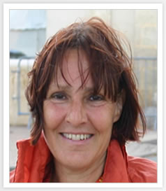

We are group 25 in the INFO2009 module at the University of Southampton - Otherwise known as Time Management. Our aim was to combine lectures, practical in class activities and group work in order to produce a resource which would teach someone about one of the module topic areas.
It was an opportunity for us to be creative and have some fun at the same time as working on a module which helps make a useful contribution to our professional education as a part of the degree. below you will find a list of our team members and what each member specialises in.
Academic Specialisms:
Software Engineering Msc at University of Southampton.
Finance and Banking Bsc at EBC, Mexico.
Skills:
Programming - Won 6 Hackathons, Coded up several projects.
Graphic Design - Designed logos, flyers, websites.
Event organization - Currently organizing the SVC2Southampton 2012.
Marketing & Sales - Was public Relations manager in a club in Shangha.
Language Teaching - Taught english at china last summer.
Academic Specialisms:
Computer Science Bsc at University of Southampton.
Skills:
Programming - Java, C, Python.
Web development - PHP, Python/Django, HTML5.
Linux system admin - set up several working email and web servers for a business.
Sound & light, organisation - Monte JCR technical officer for 1 year.
Academic Specialisms:
Information Technology in Organisations Bsc at University of Southampton.
Management, Consultant, IT Development/Security.
Skills:
Management - Course Representative for 2 years.
Programming - Javascript, C#, HTML5, PHP.
Journalism and Training - Wessex Scene Editor.
Democracy - Union Councillor.
Event Creation and Organisation - International Committee, Wessex Scene, Course Representative.
Academic Specialisms:
Information Technology in Organisations Bsc at University of Southampton.
Website & Application development, business.
Skills:
Programming - Java, C#, PHP, HTML5, Javascript.
Graphic Design - Designed websites, logos, interactive webpages.
Own a business on eBay/Amazon selling electronics
Web Development.
Designed and created my own business website.
INFO2009
Professional & Legal Issues (2012-2013)
Professional and Legal Issues is about your life, the law and decisions of right and wrong which you may encounter when you work as a professional in computing and related IT roles.
It is relevant to your life today, more so if you already produce and sell code.
Its about the ethical issues we face in every day life and its designed to help you build upon your established personal skillset so that not only are you attractive to potential employers but that you are able to master professional skills and thinking maturity which you can use actively during your undergraduate careers.
Module Leader: Dr Su White

Su White is a Senior Lecturer in Electronics and Computer Science at the University of Southampton.
Su works within the Learning Societies Lab (LSL). Her research interests relate to the impact of technology on University Education from both an educational and organizational perspective.